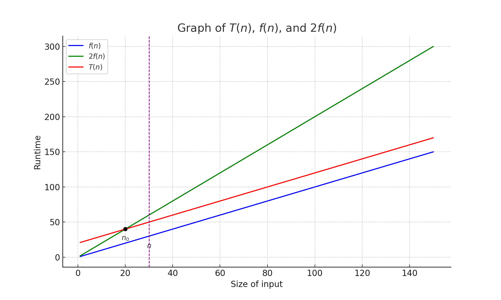

1. The Big Picture
Perspectives
- Primary goal for programmers is to create code that is functional and easy to understand.
- While ensuring good performance is important, it is crucial not to over-prioritize it.
- Overemphasizing performance can result in unnecessarily complex code, making it hard to manage.
Big-O Notation
$$
f(n) = O(g(n)) \text{ if there exist constants } c > 0 \text{ and } n_0 > 0 \text{ such that } 0 \leq f(n) \leq c \cdot g(n) \text{ for all } n \geq n_0.
$$

- Characterstics
- Constants are ignored: $1000n = O(n)$
- Low-order terms are ignored: $n^3 + n^2 + n = O(n^3)$
Big-O Classifications

- $O(1)$: Constant
- The algorithm does NOT depend on the input size.
- $O(\log n)$: Logarithmic
- The algorithm gets slightly slower as $n$ grows.
- $O(n)$: Linear
- The runtime grows as much as $n$ grows (When $n$ doubles, runtime doubles).
- $O(n \log n)$: Linearithmic
- Usually the result of performing $O(\log n)$ operation $n$ times or performing $O(n)$ operation $\log n$ times.
- $O(n^2)$: Quadratic
- $O(2^n)$: Exponential
- $O(n!)$: Factorial
Data Structures
Relationship of General-Purpose Data Structures

Back to Home
Next Lecture